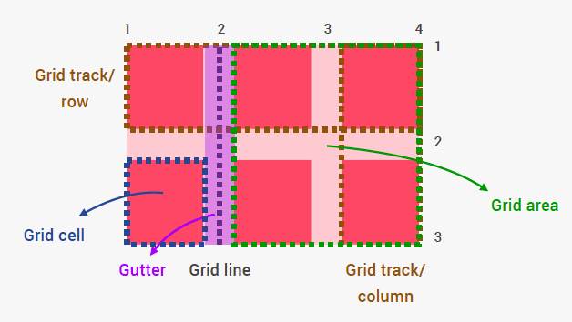

Grid Cell En grid cell är den minsta enheten i en grid. Det är den plats där den vertikala och horisontella spåren möts.
Grid Area En grid area består av en eller flera sammanlänkade grid cells. Den omges av fyra grid lines på var sin sida.
Grid Cell En grid cell är den minsta enheten i en grid. Det är den plats där den vertikala och horisontella spåren möts.
Vad är CSS Grid? Grid är ett nytt sätt att skapa layouts med CSS. En grid är en yta som har delats in till ett rutnät där ett antal linjer korsar ytan såväl horisontellt som vertikalt. För att göra en container till en grid anger man display: grid. En sida kan ha en eller flera grid containers. De element som bor i grid containern kallas grid items. I grid containern anger man också hur många/storlek på columner och rader mer grid-template-rows och grid-template-columns. Gapet mellan (gutter) anges med grid-gap. Man kan också kombinera Grid med exempelvis flexbox och float om man skulle vilja. Sammanfattningsvis kan du, med hjälp av CSS Grid, lättare bygga avancerade layouter.
I detta exempel visas ett exempel på hur man kan använda grid-areas som metod för positionering. M h a mediaqueries kan man omdefinera layouten på de grid-areas man har i grid-template-areas. CSS Grid layout är omfattande och har många möjligheter! Detta är bara en av många :-)
CSS Grid Layout fungerar i de flesta moderna webbläsare. Se Can I Use.